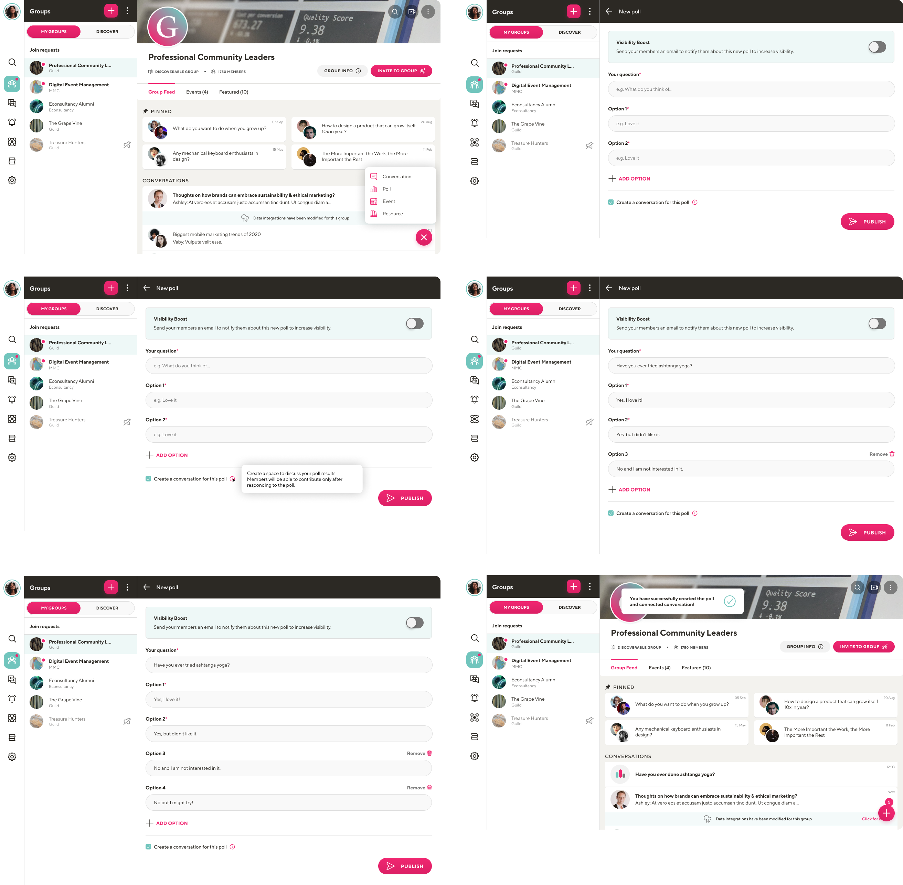

Guild Application
Click here to open Figma file
The guild app is a social app created to make networking easier. The main feature of the application is the ability to create and join groups. Groups usually focus on business-related topics or users' interests. Within groups, users can create threads, polls, events, or video calls. While working at Monterail Software House, I had the opportunity to design new features for the Guild app and redesign old ones.
One of the features which I designed, was introducing the ability to create a conversation for the specific poll. The poll conversation was meant to be a space to exchange opinions about the poll results. The business requirement was that group members would be able to see the poll conversation, only after responding to the poll question, to not be biased by other members' comments during answering it. Below, you can see screens from the flow of creating a poll and the associated conversation.

The poll conversation is automatically created after poll creation. To not create a poll conversation user needs to uncheck the checkbox on the bottom of the poll creation screen, with the copy 'Create a conversation for this poll'.
Below you can see the screens from flow of answering to poll question and joining the connected conversation.
When users enter the poll conversation for the first time they see the poll question. After answering it, they see the poll results and then they can go to the poll conversation. Next time when users will enter a poll conversation, they will go straight to the poll conversation (as they answered a poll question earlier).
When I was conducting research for this task, it turned out that many users deleted their polls because they no longer wanted to collect responses to them. Because of that, I came up with the idea to introduce the possibility of closing and reopening the polls. If the host closes the poll conversation, members are not able to answer the poll question anymore but they still can comment and see results. If members didn't respond to a poll and the poll is closed, they are still able to see its results. Below you can see screens from flow of closing and reopening poll.
The flows which I presented cover only the most common user journeys, but for implementation, I ensured coverage of all scenarios. You can view all the screens I've prepared for this task, including mobile views, in Figma file.
During the completion of this task, I redesigned the screens associated with poll creation, responses, and result visualisation, while also incorporating the feature to close and reopen polls. My aim was for all processes in the application to be consistent, so I had to make similar changes also in the flow where users opt to create polls without dedicated conversations. You can see those screens which I've prepared for this purpose in the same Figma file.